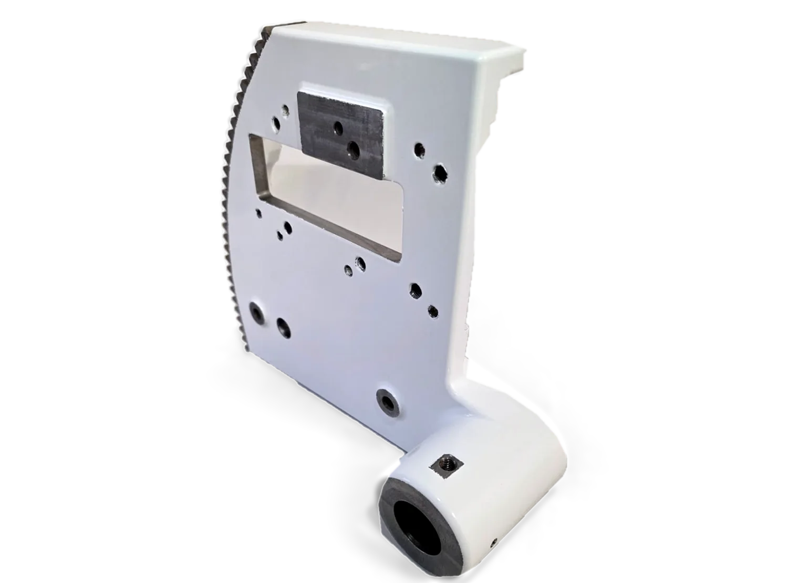
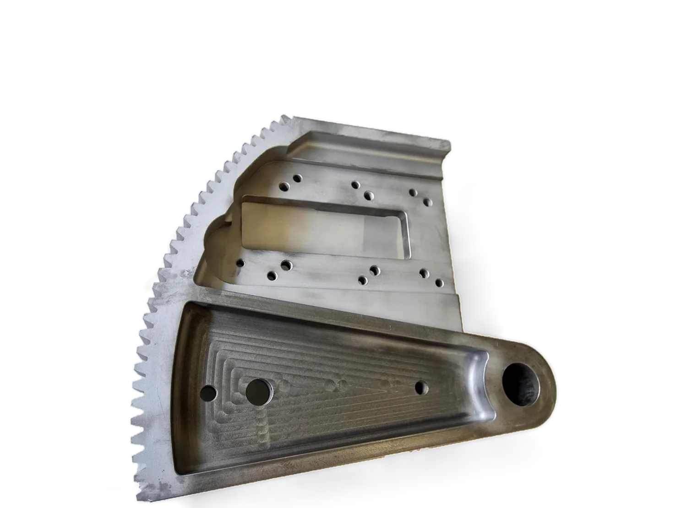
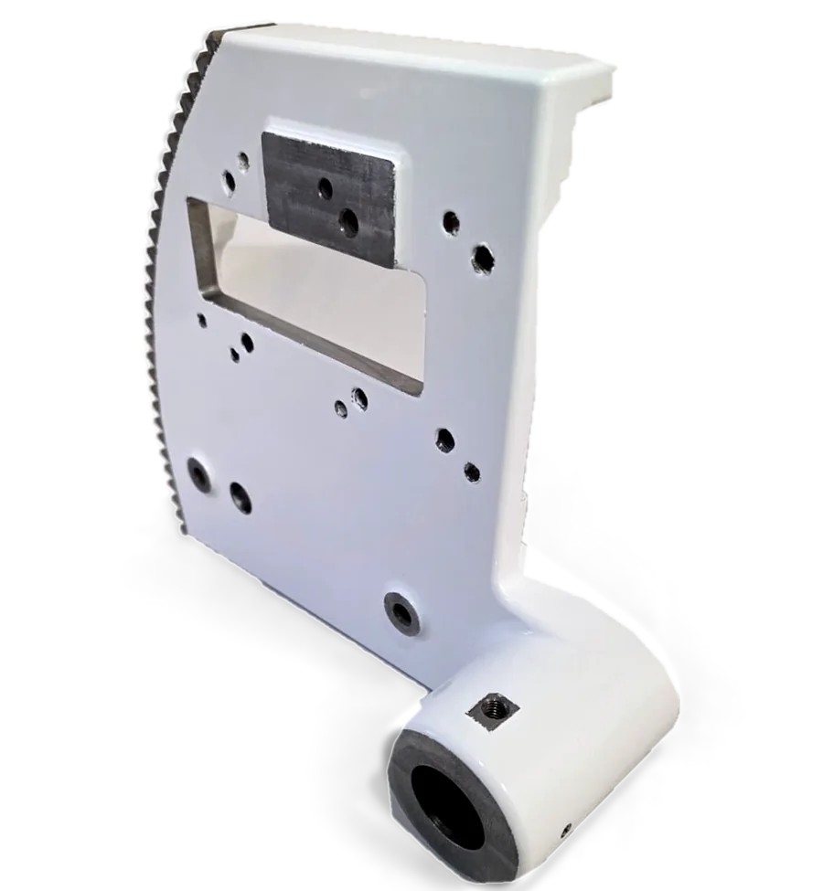
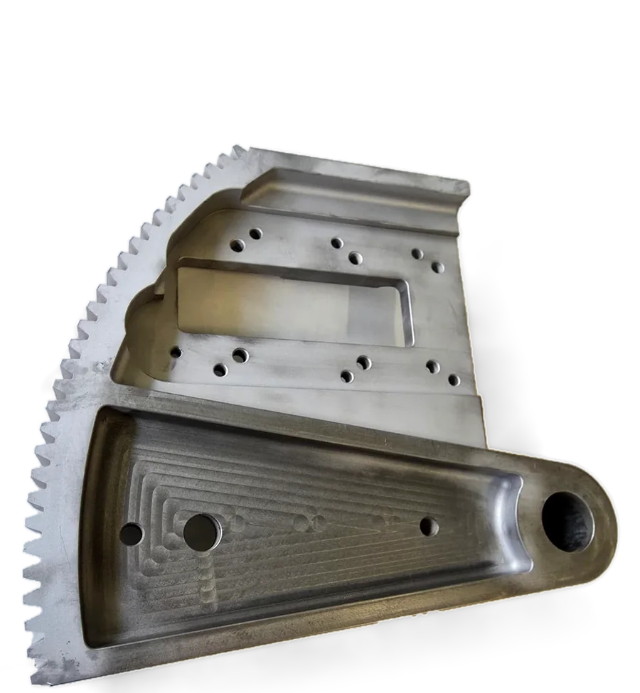
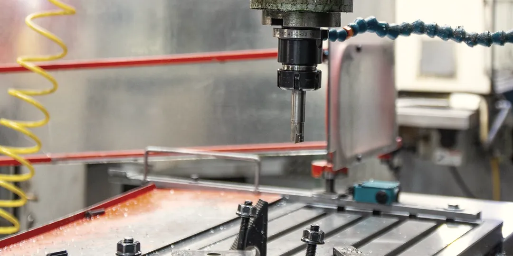
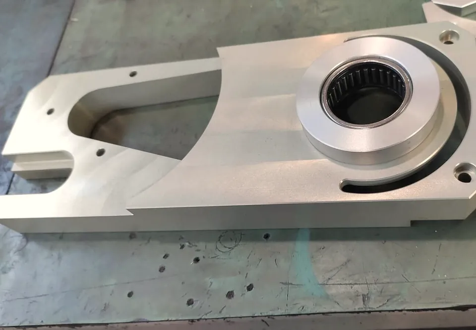
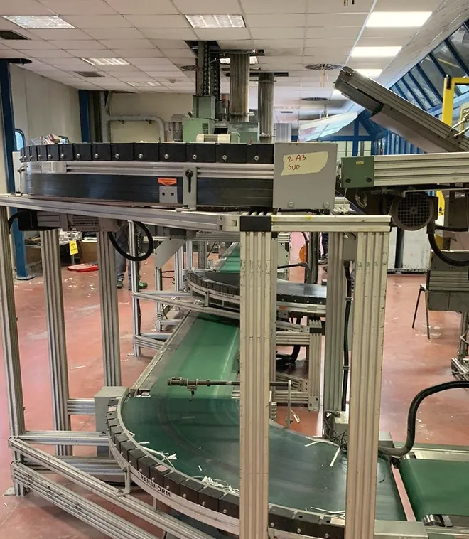
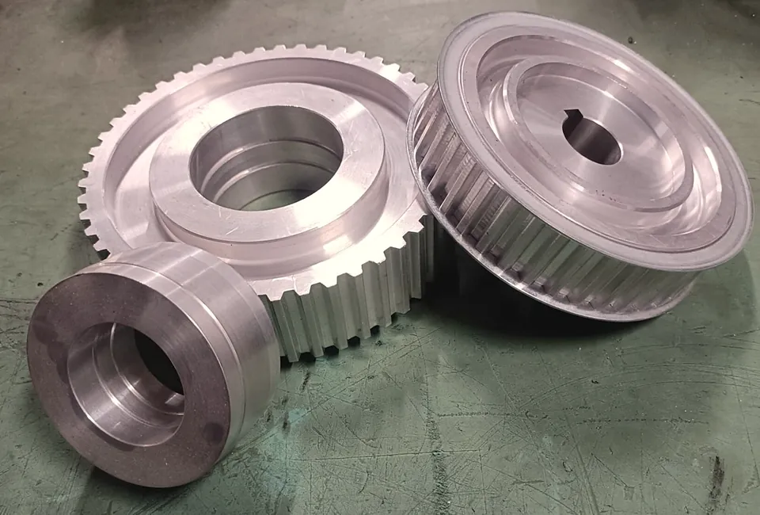

Precisione in officina, continuità in produzione
Torniamo, fresiamo, pieghiamo e saldiamo pezzi su disegno, ricavati dal pieno nella nostra officina. Per la manutenzione e l'installazione delle macchine veniamo noi in azienda.
info@meccanicamasi.itOfficina meccanica a Padova, dal 1977




Leva e settore dentato in ghisa, lavorazione CNC dal pieno
- 1Settore dentato, fresato con fresa modulo
- 2Alesatura H7
- 1Settore dentato
- 2Ghisa dal pieno, prima della verniciatura
Dalla stampa ai trasporti industriali
Produrre e rettificare rulli per macchine da stampa offset e flexo è una delle nostre specializzazioni più richieste. Lavoriamo anche per sacchettifici, confezionatrici e trasporti industriali.
Stampa offset e flexo
Rulli nuovi e rettificati, ricambi per rotative Man-Roland, interventi sulle macchine da stampa direttamente in azienda.
Giornali
Una linea di spedizione giornali, su commessa di una delle principali aziende di produzione giornali del Veneto.
Sacchetti e confezioni
Macchine per sacchettifici e confezionatrici; il rullo pinza della fondellatrice che chiude il fondo dei sacchi di carta.
Trasporti e automazione
Nastri trasportatori, rulli e guide. Installazione di macchine automatiche, dal montaggio al collaudo.

Dalla componente singola all'intera rotativa
Tutto nella nostra officina: il pezzo viene programmato e lavorato internamente, senza subappaltare nulla all'esterno.
Tornitura
Rulli per macchine da stampa offset e flexo, prodotti e rettificati, e pulegge ricavate dal pieno.
6 torni, 1 a CNCFresatura CNC
Fresatrice industriale: il pezzo viene programmato e lavorato da noi, dal singolo componente alla serie.
3 assiLamiera
Taglio e piegatura di acciaio, inox e alluminio, dal particolare piccolo alla lamiera grande.
da 10 cm a 3 mSaldatura
Saldatura professionale in officina, con tre procedimenti.
TIG, MIG/MAG, elettrodoManutenzione sul posto
Interveniamo sulle macchine dove lavorano: nastri trasportatori, rulli, guide.
offset, flexo, sacchettificiInstallazione macchine automatiche
Montaggio meccanico, sistemi automatici, configurazione e regolazioni.
dal montaggio al collaudo
Materiali: acciaio, acciaio inossidabile, alluminio, ottone, ghisa.
Due lavori per la stampa

Supporto per il rullo silicone di una rotativa offset Man-Roland
Ricavato da un blocco pieno di lega leggera per una rotativa a quattro colori: la parte centrale alleggerita, la sede del cuscinetto a rullini montato a pressione, quattro fori di fissaggio.
Alluminio 6082 o 7075, fresatura CNC a 3 assi e tornitura
Linea di spedizione giornali
Su commessa di una delle principali aziende di produzione giornali del Veneto.
Profilati di alluminio, nastri in PVC, curve a 90°Altri lavori: pulegge dal pieno, rullo pinza per fondellatrice, mandrino espansibile per ribobinatrice, basamento per braccio robotico.
Non chiediamo di smontare, imballare e spedire nulla: veniamo noi da voi
Come installiamo una macchina
- Analisi iniziale
- Montaggio meccanico completo
- Installazione dei sistemi automatici
- Configurazione e regolazioni
- Test e collaudo finale
Interveniamo su macchine da stampa offset e flexo, macchine per sacchettifici e confezionatrici, nastri trasportatori, rulli e guide, per aziende dal Friuli al Trentino, dall'Emilia-Romagna al Veneto.
Un'officina che c'era ieri, c'è oggi e sarà qui domani
348 169 34 51Via dell'Artigianato 6, 35127 Padova
Dal lunedì al venerdì 8:00‑18:00
Sabato 8:00‑12:00
Chi ci chiama parla con chi lavora, e chi lavora conosce il mestiere.
